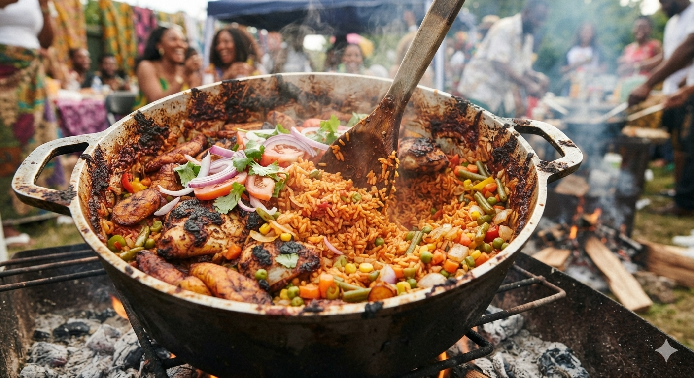

The smoky, tomato-rich rice that starts arguments are at every family gathering. This is the pary version cooked long enough to catch at the bottom
Ingredients
- 3 cups long grain parboiled rice
- 6 large tomatoes, blended
- 2 red bell pepper, diced
- Half cup of vegetable oil
- 3 tablespoons tomatoes paste
- 2 stock cubes
- 1 teaspoon curry power
- 1 teaspoon thyme
- Salt to taste
Method
- Blend the tomatoes, peppers and half the onion unit smoothly
- Heat the oil and fry the remaining onion until golden
- Add the tomato paste and fry for 2 minutes
- Add the blended tomato mixture and fry for 10 minutes
- Add the stock cubes, curry powder, thyme and salt. Stir and cook for 5 minutes
- Add the rice and stir to coat with the sauce
- Add 4 cups of water and bring to a boil
- Reduce the heat to low, cover and cook for 20 minutes
- Remove from heat and let it sit for 10 minutes before serving
Notes
The party smoke: the slight burn at the bottom is the main point.Ressit the urge to stir the rice while cooking. That bottom layer is what makes party jollof taste like a party.